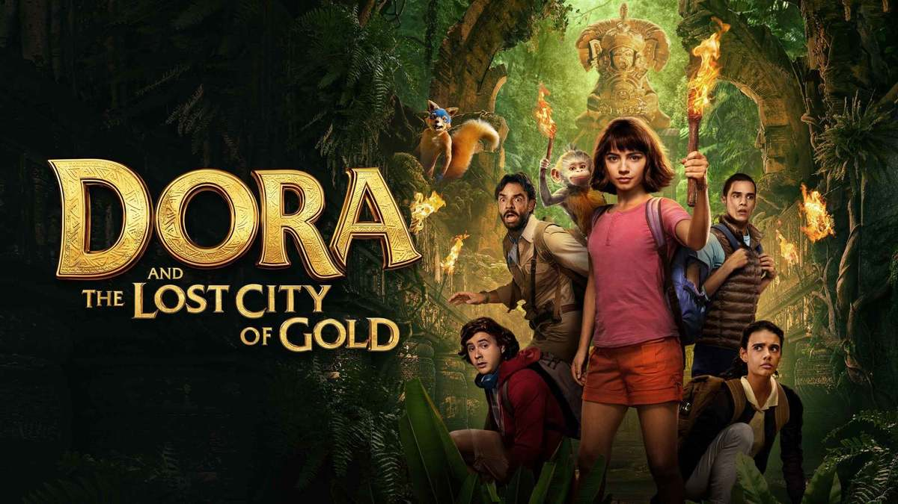

|
| | Harry Potter and the Gobelt of Fire |
The fourth movie in the series.
It features events of where Harry Potter
participates in a tournament. |
"Some say it was rushed, some say it was perfect. However, for me.. it was the perfect balance on what you'd expect in a book based movie. I honestly loved the thrill in it."
|
|
|
| Mean Girls |
A teenage girl, educated in Africa, recently moved to the suburbs of Illinois. She finally gets to experience a life in a public school, and unwillingly finds herself in a group of plastics. |
"Regina is one of an icon! This movie really is THE movie. I'd reccomend it to anyone! It contains drama, and comedy. A perfect match."
|
|

|
| Dora and the Lost City of Gold |
Spending most of her life in a jungle, Dora now has to adjust in her new life in the city. Accompanied by her friends, Dora starts her quest to save her parents. |
"In my opinion, the movie was quite rushed, and gave me second hand embarassment a bit. However, for younger aged children, this movie would be considered fun, and inspirative." |
Sources
HARRY POTTER GOBLET OF FIRE (2005)
MEAN GIRLS (2004)
DORA AND THE LOST CITY OF GOLD (2019)